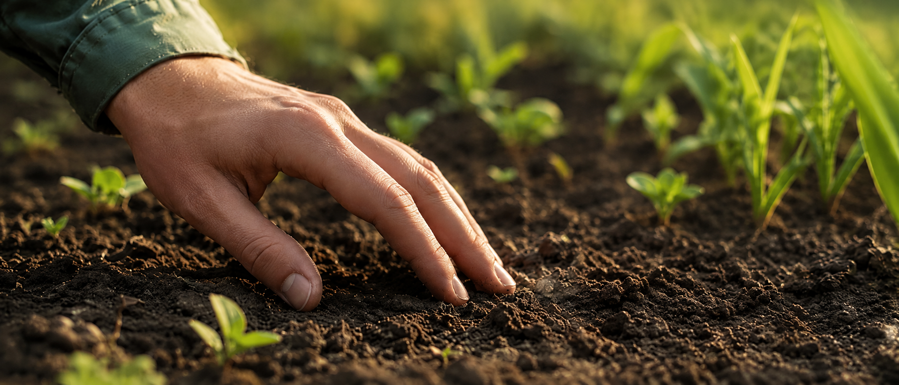
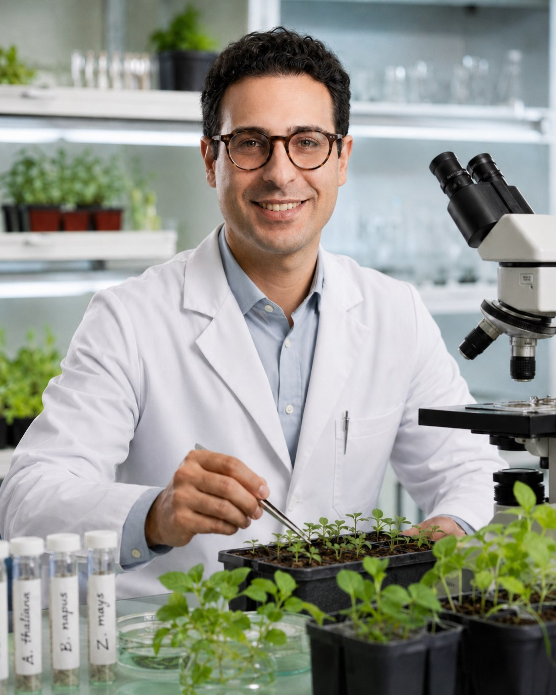
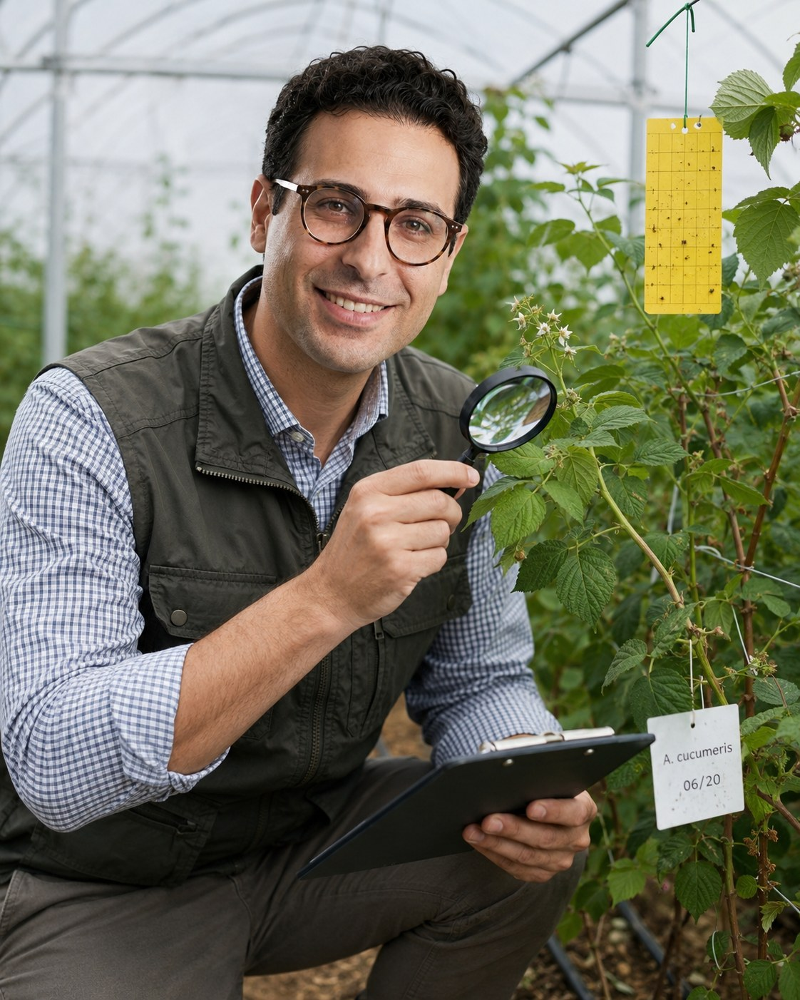
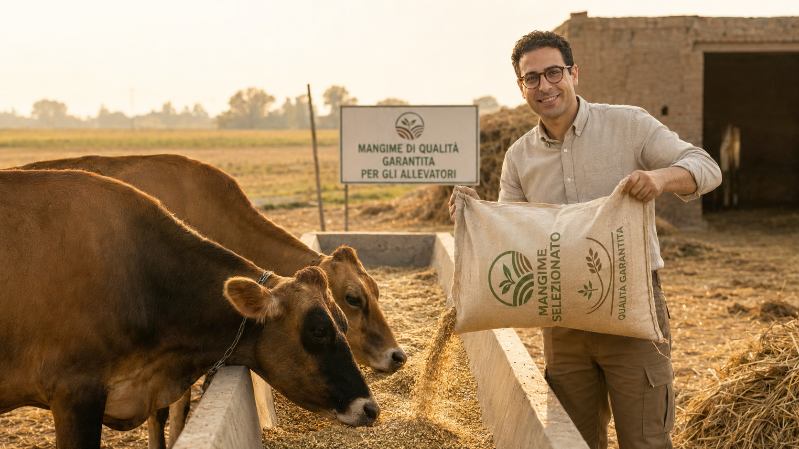

Difesa integrata e IPM
Interesse specifico per strategie di controllo integrato, riduzione dell’impatto ambientale e gestione sostenibile dei fitofagi.
Agronomia applicata · difesa sostenibile · lavoro in campo
Agronomo neo laureato con focus su difesa delle colture agrarie, lotta biologica e strategie di protezione sostenibile.
Basi scientifiche solide, entusiasmo operativo e voglia di crescere accanto a team tecnici, aziende agricole, cooperative, studi professionali e realtà della frutticoltura.
Profilo professionale
Carmelo Tilaro è un agronomo specializzato in strategie di difesa integrata, lotta biologica e gestione sostenibile delle colture. Ha maturato esperienza accademica e laboratoriale presso il DI3A dell’Università di Catania, lavorando su biopesticidi, parassitoidi e specie aliene di interesse agronomico.
Cerca un contesto professionale in cui applicare le proprie basi scientifiche al monitoraggio in campo, allo sviluppo di protocolli di protezione sostenibile e alla crescita tecnica nel settore agricolo, con particolare interesse per la frutticoltura.
“Mi interessa unire rigore scientifico e operatività: analisi, prove di laboratorio, osservazione in campo e miglioramento continuo dei protocolli.”
Suolo, crescita e attenzione ai dettagli
Dal lavoro sulle colture nasce anche l’attenzione per il suolo, per l’equilibrio dell’ambiente produttivo e per i segnali precoci che aiutano a decidere con più consapevolezza. È una base importante per chi vuole crescere come tecnico agronomo sul campo.

Competenze distintive
Interesse specifico per strategie di controllo integrato, riduzione dell’impatto ambientale e gestione sostenibile dei fitofagi.
Studio della compatibilità tra bioinsetticidi, agenti di biocontrollo e protocolli di protezione delle colture agrarie.
Esperienza in prove di tossicità acuta e valutazione di effetti subletali su adulti parassitoidi e capacità riproduttiva.
Interesse per monitoraggio satellitare, precision farming, gestione dei dati e strumenti digitali a supporto delle decisioni agronomiche.
Formazione aggiornata sui temi PAC, Farm to Fork, certificazioni e standard di qualità di filiera.
Disponibilità a trasferte frequenti, apprendimento sul campo e collaborazione con tecnici senior, aziende e consulenti.

Ricerca applicata
L’esperienza laboratoriale rafforza il suo approccio tecnico: osservazione, metodo, precisione e lettura critica dei risultati. È un aspetto importante per aziende e studi che cercano una figura junior capace di collegare il dato scientifico alla pratica agronomica.
Esperienza e formazione
Indagine degli effetti non target di biopesticidi microbici e botanici in agroecosistemi interessati da Drosophila suzukii. Prove di laboratorio su tossicità acuta, effetti subletali e interazione con parassitoidi.
Studio di casi pratici in materia ambientale: reflui zootecnici, opere di contenimento, uso di agrofarmaci, scarti di lavorazione agricola, tutela delle acque e delle falde.
Scienze e tecnologie agrarie e forestali, indirizzo Difesa delle Piante Coltivate. Tesi: Biochar: “coltivare” un clima migliore.
Biocontrollo e monitoraggio
Il lavoro con trappole cromotropiche, osservazione dei fitofagi e attenzione agli insetti utili si integra bene con il suo percorso. Carmelo può essere una risorsa interessante per chi cerca una figura junior da far crescere su IPM, monitoraggio fitosanitario e protocolli sostenibili.

Ruoli di interesse

Visione di filiera
Accanto alla difesa delle colture, Carmelo mostra attenzione per la sostenibilità complessiva della filiera agricola: qualità, tracciabilità, organizzazione e cura operativa. Un approccio utile per realtà che vogliono crescere con giovani professionisti affidabili e presenti sul campo.
Contatti
Carmelo è disponibile per posizioni junior, tirocini professionalizzanti, collaborazioni tecniche e percorsi di crescita in aziende agricole, studi agronomici, cooperative e realtà agroalimentari.